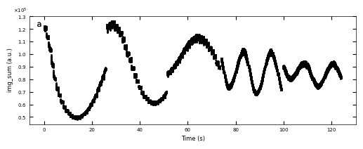
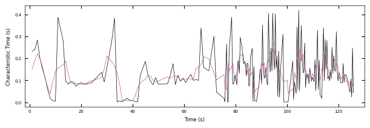
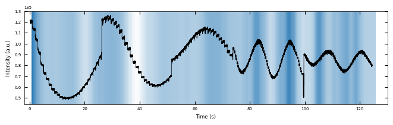
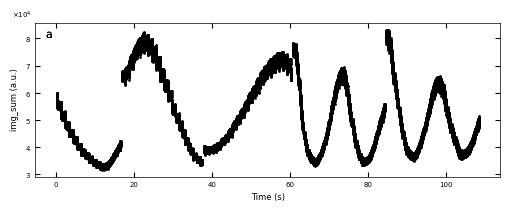
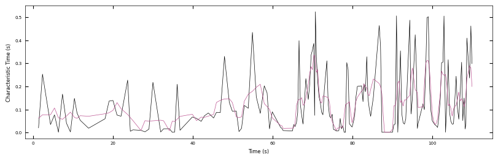
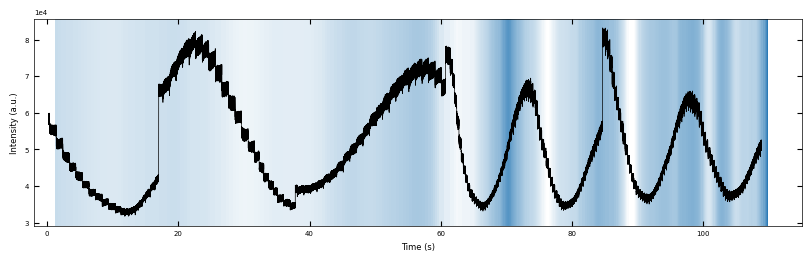
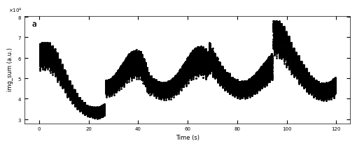
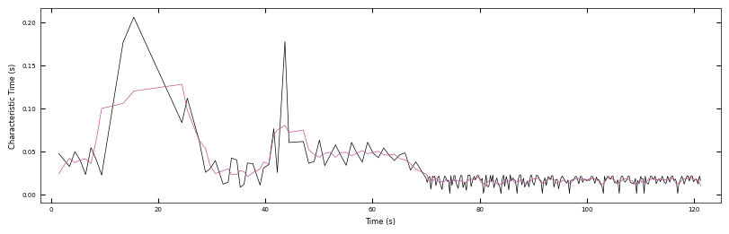
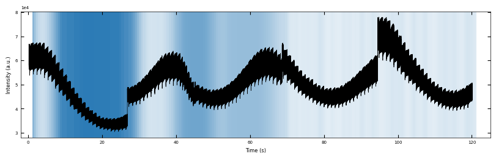
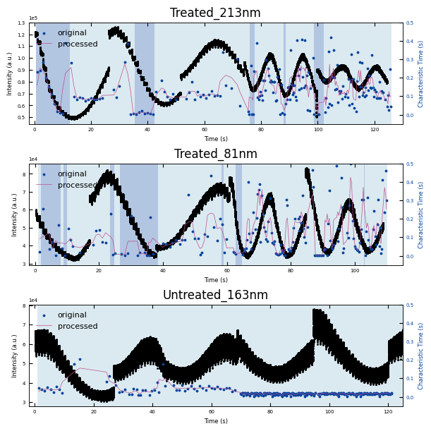

Characteristic Time with Details#
%load_ext autoreload
%autoreload 2
import sys
sys.path.append('../../src')
from m3_learning.nn.random import random_seed
from m3_learning.viz.style import set_style
from m3_learning.viz.printing import printer
from m3_learning.viz.layout import layout_fig
from m3_learning.RHEED.Dataset import RHEED_parameter_dataset
from m3_learning.RHEED.Viz import Viz
from m3_learning.RHEED.Analysis import analyze_curves, remove_outlier, smooth
from m3_learning.RHEED.Packed_functions import visualize_characteristic_time, violinplot_characteristic_time
printing = printer(basepath = 'Figures/4.Characteristic_time/')
printing_plot = printer(basepath = 'Figures/4.Characteristic_time/', fileformats=['png'])
set_style("printing")
random_seed(seed=42)
import numpy as np
import matplotlib.pyplot as plt
from matplotlib import colors
import seaborn as sns
seq_colors = ['#00429d','#2e59a8','#4771b2','#5d8abd','#73a2c6','#8abccf','#a5d5d8','#c5eddf','#ffffe0']
bgc1, bgc2 = colors.hex2color(seq_colors[0]), colors.hex2color(seq_colors[5])
color_blue = (44/255,123/255,182/255)
color_orange = (217/255,95/255,2/255)
color_purple = (117/255,112/255,179/255)
2023-06-08 21:05:59.546820: I tensorflow/core/platform/cpu_feature_guard.cc:193] This TensorFlow binary is optimized with oneAPI Deep Neural Network Library (oneDNN) to use the following CPU instructions in performance-critical operations: AVX2 FMA
To enable them in other operations, rebuild TensorFlow with the appropriate compiler flags.
2023-06-08 21:06:00.100057: W tensorflow/compiler/xla/stream_executor/platform/default/dso_loader.cc:64] Could not load dynamic library 'libnvinfer.so.7'; dlerror: libnvinfer.so.7: cannot open shared object file: No such file or directory; LD_LIBRARY_PATH: /home/ferroelectric/micromamba/envs/m3-RHEED/lib/python3.10/site-packages/cv2/../../lib64:/home/ferroelectric/micromamba/envs/m3-RHEED/lib/python3.10/site-packages/cv2/../../lib64:
2023-06-08 21:06:00.100119: W tensorflow/compiler/xla/stream_executor/platform/default/dso_loader.cc:64] Could not load dynamic library 'libnvinfer_plugin.so.7'; dlerror: libnvinfer_plugin.so.7: cannot open shared object file: No such file or directory; LD_LIBRARY_PATH: /home/ferroelectric/micromamba/envs/m3-RHEED/lib/python3.10/site-packages/cv2/../../lib64:/home/ferroelectric/micromamba/envs/m3-RHEED/lib/python3.10/site-packages/cv2/../../lib64:
2023-06-08 21:06:00.100135: W tensorflow/compiler/tf2tensorrt/utils/py_utils.cc:38] TF-TRT Warning: Cannot dlopen some TensorRT libraries. If you would like to use Nvidia GPU with TensorRT, please make sure the missing libraries mentioned above are installed properly.
printing set for seaborn
Pytorch seed was set to 42
Numpy seed was set to 42
tensorflow seed was set to 42
1. Examples of Fitted RHEED Intenstity Curve#
spot = 'spot_2'
metric = 'img_sum'
camera_freq = 500
fit_settings = {'savgol_window_order': (15, 3), 'pca_component': 10, 'I_diff': 15000,
'unify':False, 'bounds':[0.001, 1], 'p_init':[0.1, 0.4, 0.1]}
2. Analyze the Decay Curve#
2.1 Sample 1 - treated_213nm#
2.1.1 Fitting Process#
path = './Datasets/test6_gaussian_fit_parameters_all-04232023.h5'
D1_para = RHEED_parameter_dataset(path, camera_freq=500, sample_name='treated_213nm')
growth_list = ['growth_1', 'growth_2', 'growth_3', 'growth_4', 'growth_5']
D1_para.viz_RHEED_parameter_trend(growth_list, spot='spot_2', metric_list=['img_sum'], head_tail=(100,300), interval=200)

Gaussian fitted parameters in time: Fig. a: sum of original image, b: sum of reconstructed image, c: spot center in spot x coordinate, d: spot center in y coordinate, e: spot width in x coordinate, f: spot width in y coordinate.
growth_dict = {'growth_1':1, 'growth_2':1, 'growth_3':1, 'growth_4':3, 'growth_5':3}
x_all, y_all = D1_para.load_multiple_curves(growth_dict.keys(), spot, metric, x_start=0, interval=0)
parameters_all, x_coor_all, info = analyze_curves(D1_para, growth_dict, spot, metric, interval=0, fit_settings=fit_settings)
[xs_all, ys_all, ys_fit_all, ys_nor_all, ys_nor_fit_all, ys_nor_fit_failed_all, labels_all, losses_all] = info
# define two color regime
x_y1 = x_coor_all[losses_all[:,0]>losses_all[:,1]]
x_y2 = x_coor_all[losses_all[:,0]<losses_all[:,1]]
color_array = Viz.two_color_array(x_coor_all, x_y1, x_y2, bgc1, bgc2, transparency=0.5)
color_array = np.concatenate([np.expand_dims(x_coor_all, 1), color_array], axis=1)
Viz.plot_fit_details(xs_all, ys_nor_all, ys_nor_fit_all, ys_nor_fit_failed_all, index_list=range(len(x_all)),
save_name='fitting_details_treated_213nm', printing=printing_plot)
Figures/4.Characteristic_time/fitting_details_treated_213nm-1.png
Figures/4.Characteristic_time/fitting_details_treated_213nm-2.png
Figures/4.Characteristic_time/fitting_details_treated_213nm-3.png
Figures/4.Characteristic_time/fitting_details_treated_213nm-4.png
2.1.2 Fitted parameters#
fig, axes = layout_fig(4, 1, figsize=(6.5, 2*4))
Viz.plot_curve(axes[0], x_all, y_all, plot_type='lineplot', xlabel='Time (s)', ylabel='Intensity (a.u.)', xlim=(-2, 130), yaxis_style='sci')
Viz.plot_curve(axes[1], x_coor_all, parameters_all[:,0], plot_type='lineplot', xlabel='Time (s)', ylabel='Fitted a (a.u.)', xlim=(-2, 130))
Viz.plot_curve(axes[2], x_coor_all, parameters_all[:,1], plot_type='lineplot', xlabel='Time (s)', ylabel='Fitted b (a.u.)', xlim=(-2, 130))
Viz.plot_curve(axes[3], x_coor_all, parameters_all[:,2], plot_type='lineplot', xlabel='Time (s)', ylabel='Characteristic Time (s)', xlim=(-2, 130))
printing_plot.savefig(fig, 'treated_213nm-a_b_tau')
plt.show()
Figures/4.Characteristic_time/treated_213nm-a_b_tau.png
2.1.3 Remove Outliers#
Because there is hard boundary when characteristic >= 1, so we can assume the characteristic data that >= 0.95 are outliers and remove from plot. And we also process the data with less noise to observe the trend.
x_coor_all_clean, tau_clean = remove_outlier(x_coor_all, parameters_all[:,2], 0.95)
tau_smooth = smooth(tau_clean, 5)
x_coor_all_clean_sample1 = np.copy(x_coor_all_clean)
tau_clean_sample1 = np.copy(tau_clean)
tau_smooth_sample1 = np.copy(tau_smooth)
fig, ax = plt.subplots(1, 1, figsize=(6, 2), layout='compressed')
Viz.plot_curve(ax, x_coor_all_clean_sample1, tau_clean_sample1, curve_y_fit=tau_smooth_sample1, plot_type='lineplot',
plot_colors=['k', '#bc5090'], xlabel='Time (s)', ylabel='Characteristic Time (s)',
yaxis_style='linear', markersize=3, xlim=(-2, 130))
plt.show()

2.1.4 Plot with Background#
x_coor_all_clean, tau_clean = remove_outlier(x_coor_all, parameters_all[:,2], 0.95)
tau_smooth = smooth(tau_clean, 3)
x_FineStep, colors_all = Viz.make_fine_step(x_coor_all_clean, tau_smooth, step=2, color=color_blue, saturation=1, savgol_filter_level=(15, 3))
color_array = np.concatenate([np.expand_dims(x_FineStep, 1), colors_all], axis=1)
x_all_sample1 = np.copy(x_all)
y_all_sample1 = np.copy(y_all)
color_array_sample1 = np.copy(color_array)
fig, ax = plt.subplots(1, 1, figsize=(6.5, 2), layout='compressed')
Viz.draw_background_colors(ax, color_array_sample1)
ax.plot(x_all_sample1, y_all_sample1, color='k')
Viz.set_labels(ax, xlabel='Time (s)', ylabel='Intensity (a.u.)', title=None, xlim=(-2, 130))
plt.show()
fig.savefig("test", dpi = 300)

np.save('Saved_data/treated_213nm-fitting_results(sklearn).npy', np.concatenate([np.expand_dims(x_coor_all, 1), parameters_all], axis=1))
np.save('Saved_data/treated_213nm-bg_tau.npy', color_array_sample1)
2.2 Sample 2 - treated_81nm#
2.2.1 Fitting process#
path = './Datasets/test7_gaussian_fit_parameters_all-04232023.h5'
D2_para = RHEED_parameter_dataset(path, camera_freq=500, sample_name='treated_81nm')
growth_list = ['growth_1', 'growth_2', 'growth_3', 'growth_4', 'growth_5']
D2_para.viz_RHEED_parameter_trend(growth_list, spot='spot_2', metric_list=['img_sum'], head_tail=(100,300), interval=200)

Gaussian fitted parameters in time: Fig. a: sum of original image, b: sum of reconstructed image, c: spot center in spot x coordinate, d: spot center in y coordinate, e: spot width in x coordinate, f: spot width in y coordinate.
growth_dict = {'growth_1':1, 'growth_2':1, 'growth_3':1, 'growth_4':3, 'growth_5':3}
x_all, y_all = D2_para.load_multiple_curves(growth_dict.keys(), spot, metric, x_start=0, interval=0)
parameters_all, x_coor_all, info = analyze_curves(D2_para, growth_dict, spot, metric, interval=0, fit_settings=fit_settings)
[xs_all, ys_all, ys_fit_all, ys_nor_all, ys_nor_fit_all, ys_nor_fit_failed_all, labels_all, losses_all] = info
# define two color regime
x_y1 = x_coor_all[losses_all[:,0]>losses_all[:,1]]
x_y2 = x_coor_all[losses_all[:,0]<losses_all[:,1]]
color_array = Viz.two_color_array(x_coor_all, x_y1, x_y2, bgc1, bgc2, transparency=0.5)
color_array = np.concatenate([np.expand_dims(x_coor_all, 1), color_array], axis=1)
Viz.plot_fit_details(xs_all, ys_nor_all, ys_nor_fit_all, ys_nor_fit_failed_all, index_list=range(len(x_all)),
save_name='fitting_details_treated_81nm', printing=printing_plot)
Figures/4.Characteristic_time/fitting_details_treated_81nm-1.png
Figures/4.Characteristic_time/fitting_details_treated_81nm-2.png
Figures/4.Characteristic_time/fitting_details_treated_81nm-3.png
Figures/4.Characteristic_time/fitting_details_treated_81nm-4.png
2.2.2 Fitted parameters#
fig, axes = layout_fig(4, 1, figsize=(8, 10))
Viz.plot_curve(axes[0], x_all, y_all, plot_type='lineplot', xlabel='Time (s)', ylabel='Intensity (a.u.)', xlim=(-2, 115), yaxis_style='sci')
Viz.plot_curve(axes[1], x_coor_all, parameters_all[:,0], plot_type='lineplot', xlabel='Time (s)', ylabel='Fitted a (a.u.)', xlim=(-2, 115))
Viz.plot_curve(axes[2], x_coor_all, parameters_all[:,1], plot_type='lineplot', xlabel='Time (s)', ylabel='Fitted b (a.u.)', xlim=(-2, 115))
Viz.plot_curve(axes[3], x_coor_all, parameters_all[:,2], plot_type='lineplot', xlabel='Time (s)', ylabel='Characteristic Time (s)', xlim=(-2, 115))
printing_plot.savefig(fig, 'treated_81nm-a_b_tau')
plt.show()
Figures/4.Characteristic_time/treated_81nm-a_b_tau.png
2.2.3 Remove Outliers#
Because there is hard boundary when characteristic >= 1, so we can assume the characteristic data that >= 0.95 are outliers and remove from plot. And we also process the data with less noise to observe the trend.
x_coor_all_clean, tau_clean = remove_outlier(x_coor_all, parameters_all[:,2], 0.95)
tau_smooth = smooth(tau_clean, 5)
x_coor_all_clean_sample2 = np.copy(x_coor_all_clean)
tau_clean_sample2 = np.copy(tau_clean)
tau_smooth_sample2 = np.copy(tau_smooth)
fig, ax = plt.subplots(1, 1, figsize=(8, 2.5), layout='compressed')
Viz.plot_curve(ax, x_coor_all_clean_sample2, tau_clean_sample2, curve_y_fit=tau_smooth_sample2, plot_type='lineplot',
plot_colors=['k', '#bc5090'], xlabel='Time (s)', ylabel='Characteristic Time (s)',
yaxis_style='linear', markersize=3, xlim=(-2, 115))

2.2.4 Plot with Background#
x_coor_all_clean, tau_clean = remove_outlier(x_coor_all, parameters_all[:,2], 0.95)
tau_smooth = smooth(tau_clean, 3)
x_FineStep, colors_all = Viz.make_fine_step(x_coor_all_clean, tau_smooth, step=2, color=color_blue, saturation=1, savgol_filter_level=(15, 3))
color_array = np.concatenate([np.expand_dims(x_FineStep, 1), colors_all], axis=1)
x_all_sample2 = np.copy(x_all)
y_all_sample2 = np.copy(y_all)
color_array_sample2 = np.copy(color_array)
fig, ax = plt.subplots(1, 1, figsize=(8, 2.5), layout='compressed')
Viz.draw_background_colors(ax, color_array_sample2)
ax.plot(x_all_sample2, y_all_sample2, color='k')
Viz.set_labels(ax, xlabel='Time (s)', ylabel='Intensity (a.u.)', title=None, xlim=(-2, 115))
plt.show()

np.save('Saved_data/treated_81nm-fitting_results(sklearn).npy', np.concatenate([np.expand_dims(x_coor_all, 1), parameters_all], axis=1))
np.save('Saved_data/treated_81nm-bg_tau.npy', color_array_sample2)
2.3 Sample 3 - untreated_162nm#
2.3.1 Fitting Process#
path = './Datasets/test9_gaussian_fit_parameters_all-04232023.h5'
D3_para = RHEED_parameter_dataset(path, camera_freq=500, sample_name='untreated_162nm')
growth_list = ['growth_1', 'growth_2', 'growth_3', 'growth_4', 'growth_5']
D3_para.viz_RHEED_parameter_trend(growth_list, spot='spot_2', metric_list=['img_sum'], head_tail=(100,300), interval=200)

Gaussian fitted parameters in time: Fig. a: sum of original image, b: sum of reconstructed image, c: spot center in spot x coordinate, d: spot center in y coordinate, e: spot width in x coordinate, f: spot width in y coordinate.
growth_dict = {'growth_1':1, 'growth_2':1, 'growth_3':1, 'growth_4':3, 'growth_5':3}
x_all, y_all = D3_para.load_multiple_curves(growth_dict.keys(), spot, metric, x_start=0, interval=0)
parameters_all, x_coor_all, info = analyze_curves(D3_para, growth_dict, spot, metric, interval=0, fit_settings=fit_settings)
[xs_all, ys_all, ys_fit_all, ys_nor_all, ys_nor_fit_all, ys_nor_fit_failed_all, labels_all, losses_all] = info
# define two color regime
x_y1 = x_coor_all[losses_all[:,0]>losses_all[:,1]]
x_y2 = x_coor_all[losses_all[:,0]<losses_all[:,1]]
color_array = Viz.two_color_array(x_coor_all, x_y1, x_y2, bgc1, bgc2, transparency=0.5)
color_array = np.concatenate([np.expand_dims(x_coor_all, 1), color_array], axis=1)
Viz.plot_fit_details(xs_all, ys_nor_all, ys_nor_fit_all, ys_nor_fit_failed_all, index_list=range(len(x_all)),
save_name='fitting_details_untreated_162nm', printing=printing_plot)
Figures/4.Characteristic_time/fitting_details_untreated_162nm-1.png
Figures/4.Characteristic_time/fitting_details_untreated_162nm-2.png
Figures/4.Characteristic_time/fitting_details_untreated_162nm-3.png
Figures/4.Characteristic_time/fitting_details_untreated_162nm-4.png
Figures/4.Characteristic_time/fitting_details_untreated_162nm-5.png
2.3.2 Fitted parameters#
fig, axes = layout_fig(4, 1, figsize=(8, 10))
Viz.plot_curve(axes[0], x_all, y_all, plot_type='lineplot', xlabel='Time (s)', ylabel='Intensity (a.u.)', xlim=(-2, 125), yaxis_style='sci')
Viz.plot_curve(axes[1], x_coor_all, parameters_all[:,0], plot_type='lineplot', xlabel='Time (s)', ylabel='Fitted a (a.u.)', xlim=(-2, 125))
Viz.plot_curve(axes[2], x_coor_all, parameters_all[:,1], plot_type='lineplot', xlabel='Time (s)', ylabel='Fitted b (a.u.)', xlim=(-2, 125))
Viz.plot_curve(axes[3], x_coor_all, parameters_all[:,2], plot_type='lineplot', xlabel='Time (s)', ylabel='Characteristic Time (s)', xlim=(-2, 125))
printing_plot.savefig(fig, 'untreated_162nm-a_b_tau')
plt.show()
Figures/4.Characteristic_time/untreated_162nm-a_b_tau.png
2.3.3#
Because there is hard boundary when characteristic >= 1, so we can assume the characteristic data that >= 0.95 are outliers and remove from plot. And we also process the data with less noise to observe the trend.
x_coor_all_clean, tau_clean = remove_outlier(x_coor_all, parameters_all[:,2], 0.95)
tau_smooth = smooth(tau_clean, 5)
x_coor_all_clean_sample3 = np.copy(x_coor_all_clean)
tau_clean_sample3 = np.copy(tau_clean)
tau_smooth_sample3 = np.copy(tau_smooth)
fig, ax = plt.subplots(1, 1, figsize=(8, 2.5), layout='compressed')
Viz.plot_curve(ax, x_coor_all_clean_sample3, tau_clean_sample3, curve_y_fit=tau_smooth_sample3, plot_type='lineplot',
plot_colors=['k', '#bc5090'], xlabel='Time (s)', ylabel='Characteristic Time (s)',
yaxis_style='linear', markersize=3, xlim=(-2, 125))

2.3.4 Plot with Background#
x_coor_all_clean, tau_clean = remove_outlier(x_coor_all, parameters_all[:,2], 0.95)
tau_smooth = smooth(tau_clean, 3)
x_FineStep, colors_all = Viz.make_fine_step(x_coor_all_clean, tau_smooth, step=2, color=color_blue, saturation=1, savgol_filter_level=(15, 3))
color_array = np.concatenate([np.expand_dims(x_FineStep, 1), colors_all], axis=1)
x_all_sample3 = np.copy(x_all)
y_all_sample3 = np.copy(y_all)
color_array_sample3 = np.copy(color_array)
fig, ax = plt.subplots(1, 1, figsize=(8, 2.5), layout='compressed')
Viz.draw_background_colors(ax, color_array_sample3)
ax.plot(x_all_sample3, y_all_sample3, color='k')
Viz.set_labels(ax, xlabel='Time (s)', ylabel='Intensity (a.u.)', title=None, xlim=(-2, 125))
plt.show()

np.save('Saved_data/untreated_162nm-fitting_results(sklearn).npy', np.concatenate([np.expand_dims(x_coor_all, 1), parameters_all], axis=1))
np.save('Saved_data/untreated_162nm-bg_tau.npy', color_array_sample3)
3. Summary of Figures#
3.1 Plots of Characteristic Times with RHEED intensity#
3.1.1 Sample 1 - treated_213nm#
x_all_sample1, y_all_sample1 = np.load('Saved_data/treated_213nm-x_all.npy'), np.load('Saved_data/treated_213nm-y_all.npy')
x_sklearn_sample1, tau_sklearn_sample1 = np.swapaxes(np.load('Saved_data/treated_213nm-fitting_results(sklearn).npy'), 0, 1)[[0, -1]]
x_sklearn_sample1, tau_clean_sample1 = remove_outlier(x_sklearn_sample1, tau_sklearn_sample1, 0.95)
tau_smooth_sample1 = smooth(tau_clean_sample1, 3)
bg_growth_sample1 = np.load('Saved_data/treated_213nm-bg_growth.npy')
bg_tau_sample1 = np.load('Saved_data/treated_213nm-bg_tau.npy')
fig, ax1 = plt.subplots(1, 1, figsize=(8, 2.5), layout='compressed')
ax1.scatter(x_all_sample1, y_all_sample1, color='k', s=1)
Viz.set_labels(ax1, xlabel='Time (s)', ylabel='Intensity (a.u.)', xlim=(-2, 130), ticks_both_sides=False)
ax2 = ax1.twinx()
ax2.scatter(x_sklearn_sample1, tau_clean_sample1, color=seq_colors[0], s=3)
ax2.plot(x_sklearn_sample1, tau_smooth_sample1, color='#bc5090', markersize=3)
Viz.set_labels(ax2, ylabel='Characteristic Time (s)', yaxis_style='lineplot', ylim=(-0.05, 0.5), ticks_both_sides=False)
# colors.hex2color(seq_colors[0])
ax2.tick_params(axis="y", color='k', labelcolor=seq_colors[0])
ax2.set_ylabel('Characteristic Time (s)', color=seq_colors[0])
# ax2.tick_params(axis="y", color='k', labelcolor=seq_colors[0])
# ax2.set_ylabel('Characteristic Time (s)', color=seq_colors[0])
plt.legend(['original', 'processed'])
printing_plot.savefig(fig, 'treated_213nm-no_bg')
plt.show()
Figures/4.Characteristic_time/treated_213nm-no_bg.png
fig, ax1 = plt.subplots(1, 1, figsize=(8, 2.5), layout='compressed')
Viz.draw_background_colors(ax1, bg_tau_sample1)
ax1.scatter(x_all_sample1, y_all_sample1, color='k', s=1)
Viz.set_labels(ax1, xlabel='Time (s)', ylabel='Intensity (a.u.)', xlim=(-2, 130), ticks_both_sides=False)
ax2 = ax1.twinx()
ax2.scatter(x_sklearn_sample1, tau_clean_sample1, color=seq_colors[0], s=3)
ax2.plot(x_sklearn_sample1, tau_smooth_sample1, color='#bc5090', markersize=3)
Viz.set_labels(ax2, ylabel='Characteristic Time (s)', yaxis_style='lineplot', ylim=(-0.05, 0.5), ticks_both_sides=False)
ax2.tick_params(axis="y", color='k', labelcolor=seq_colors[0])
ax2.set_ylabel('Characteristic Time (s)', color=seq_colors[0])
plt.legend(['original', 'processed'])
printing_plot.savefig(fig, 'treated_213nm-tau_bg')
plt.show()
Figures/4.Characteristic_time/treated_213nm-tau_bg.png
fig, ax1 = plt.subplots(1, 1, figsize=(8, 2.5), layout='compressed')
Viz.draw_background_colors(ax1, bg_growth_sample1)
ax1.scatter(x_all_sample1, y_all_sample1, color='k', s=1)
Viz.set_labels(ax1, xlabel='Time (s)', ylabel='Intensity (a.u.)', xlim=(-2, 130), ticks_both_sides=False)
ax2 = ax1.twinx()
ax2.scatter(x_sklearn_sample1, tau_clean_sample1, color=seq_colors[0], s=3)
ax2.plot(x_sklearn_sample1, tau_smooth_sample1, color='#bc5090', markersize=3)
Viz.set_labels(ax2, ylabel='Characteristic Time (s)', yaxis_style='lineplot', ylim=(-0.05, 0.5), ticks_both_sides=False)
ax2.tick_params(axis="y", color='k', labelcolor=seq_colors[0])
ax2.set_ylabel('Characteristic Time (s)', color=seq_colors[0])
plt.legend(['original', 'processed'])
printing_plot.savefig(fig, 'treated_213nm-growth_bg')
plt.show()
Figures/4.Characteristic_time/treated_213nm-growth_bg.png
3.1.2 Sample 2 - treated_81nm#
x_all_sample2, y_all_sample2 = np.load('Saved_data/treated_81nm-x_all.npy'), np.load('Saved_data/treated_81nm-y_all.npy')
x_sklearn_sample2, tau_sklearn_sample2 = np.swapaxes(np.load('Saved_data/treated_81nm-fitting_results(sklearn).npy'), 0, 1)[[0, -1]]
x_sklearn_sample2, tau_clean_sample2 = remove_outlier(x_sklearn_sample2, tau_sklearn_sample2, 0.95)
tau_smooth_sample2 = smooth(tau_clean_sample2, 3)
bg_growth_sample2 = np.load('Saved_data/treated_81nm-bg_growth.npy')
bg_tau_sample2 = np.load('Saved_data/treated_81nm-bg_tau.npy')
fig, ax1 = plt.subplots(1, 1, figsize=(8, 2.5), layout='compressed')
ax1.scatter(x_all_sample2, y_all_sample2, color='k', s=1)
Viz.set_labels(ax1, xlabel='Time (s)', ylabel='Intensity (a.u.)', xlim=(-2, 115), ticks_both_sides=False)
ax2 = ax1.twinx()
ax2.scatter(x_sklearn_sample2, tau_clean_sample2, color=seq_colors[0], s=3)
ax2.plot(x_sklearn_sample2, tau_smooth_sample2, color='#bc5090', markersize=3)
Viz.set_labels(ax2, ylabel='Characteristic Time (s)', yaxis_style='lineplot', ylim=(-0.05, 0.5), ticks_both_sides=False)
ax2.tick_params(axis="y", color='k', labelcolor=seq_colors[0])
ax2.set_ylabel('Characteristic Time (s)', color=seq_colors[0])
plt.legend(['original', 'processed'])
printing_plot.savefig(fig, 'treated_81nm-no_bg')
plt.show()
Figures/4.Characteristic_time/treated_81nm-no_bg.png
fig, ax1 = plt.subplots(1, 1, figsize=(8, 2.5), layout='compressed')
Viz.draw_background_colors(ax1, bg_tau_sample2)
ax1.scatter(x_all_sample2, y_all_sample2, color='k', s=1)
Viz.set_labels(ax1, xlabel='Time (s)', ylabel='Intensity (a.u.)', xlim=(-2, 115), ticks_both_sides=False)
ax2 = ax1.twinx()
ax2.scatter(x_sklearn_sample2, tau_clean_sample2, color=seq_colors[0], s=3)
ax2.plot(x_sklearn_sample2, tau_smooth_sample2, color='#bc5090', markersize=3)
Viz.set_labels(ax2, ylabel='Characteristic Time (s)', yaxis_style='lineplot', ylim=(-0.05, 0.5), ticks_both_sides=False)
ax2.tick_params(axis="y", color='k', labelcolor=seq_colors[0])
ax2.set_ylabel('Characteristic Time (s)', color=seq_colors[0])
plt.legend(['original', 'processed'])
printing_plot.savefig(fig, 'treated_81nm-tau_bg')
plt.show()
Figures/4.Characteristic_time/treated_81nm-tau_bg.png

fig, ax1 = plt.subplots(1, 1, figsize=(8, 2.5), layout='compressed')
Viz.draw_background_colors(ax1, bg_growth_sample2)
ax1.scatter(x_all_sample2, y_all_sample2, color='k', s=1)
Viz.set_labels(ax1, xlabel='Time (s)', ylabel='Intensity (a.u.)', xlim=(-2, 115), ticks_both_sides=False)
ax2 = ax1.twinx()
ax2.scatter(x_sklearn_sample2, tau_clean_sample2, color=seq_colors[0], s=3)
ax2.plot(x_sklearn_sample2, tau_smooth_sample2, color='#bc5090', markersize=3)
Viz.set_labels(ax2, ylabel='Characteristic Time (s)', yaxis_style='lineplot', ylim=(-0.05, 0.5), ticks_both_sides=False)
ax2.tick_params(axis="y", color='k', labelcolor=seq_colors[0])
ax2.set_ylabel('Characteristic Time (s)', color=seq_colors[0])
plt.legend(['original', 'processed'])
printing_plot.savefig(fig, 'treated_81nm-growth_bg')
plt.show()
Figures/4.Characteristic_time/treated_81nm-growth_bg.png
3.1.3 Sample 3 - untreated_162nm#
x_all_sample3, y_all_sample3 = np.load('Saved_data/untreated_162nm-x_all.npy'), np.load('Saved_data/untreated_162nm-y_all.npy')
x_sklearn_sample3, tau_sklearn_sample3 = np.swapaxes(np.load('Saved_data/untreated_162nm-fitting_results(sklearn).npy'), 0, 1)[[0, -1]]
x_sklearn_sample3, tau_clean_sample3 = remove_outlier(x_sklearn_sample3, tau_sklearn_sample3, 0.95)
tau_smooth_sample3 = smooth(tau_clean_sample3, 3)
bg_growth_sample3 = np.load('Saved_data/untreated_162nm-bg_growth.npy')
bg_tau_sample3 = np.load('Saved_data/untreated_162nm-bg_tau.npy')
fig, ax1 = plt.subplots(1, 1, figsize=(8, 2.5), layout='compressed')
ax1.scatter(x_all_sample3, y_all_sample3, color='k', s=1)
Viz.set_labels(ax1, xlabel='Time (s)', ylabel='Intensity (a.u.)', xlim=(-2, 200), ticks_both_sides=False)
ax2 = ax1.twinx()
ax2.scatter(x_sklearn_sample3, tau_clean_sample3, color=seq_colors[0], s=3)
ax2.plot(x_sklearn_sample3, tau_smooth_sample3, color='#bc5090', markersize=3)
Viz.set_labels(ax2, ylabel='Characteristic Time (s)', yaxis_style='lineplot', ylim=(-0.05, 0.5), ticks_both_sides=False)
ax2.tick_params(axis="y", color='k', labelcolor=seq_colors[0])
ax2.set_ylabel('Characteristic Time (s)', color=seq_colors[0])
plt.legend(['original', 'processed'])
printing_plot.savefig(fig, 'untreated_162nm-no_bg')
plt.show()
Figures/4.Characteristic_time/untreated_162nm-no_bg.png
fig, ax1 = plt.subplots(1, 1, figsize=(8, 2.5), layout='compressed')
Viz.draw_background_colors(ax1, bg_tau_sample3)
ax1.scatter(x_all_sample3, y_all_sample3, color='k', s=1)
Viz.set_labels(ax1, xlabel='Time (s)', ylabel='Intensity (a.u.)', xlim=(-2, 125), ticks_both_sides=False)
ax2 = ax1.twinx()
ax2.scatter(x_sklearn_sample3, tau_clean_sample3, color=seq_colors[0], s=3)
ax2.plot(x_sklearn_sample3, tau_smooth_sample3, color='#bc5090', markersize=3)
Viz.set_labels(ax2, ylabel='Characteristic Time (s)', yaxis_style='lineplot', ylim=(-0.05, 0.5), ticks_both_sides=False)
ax2.tick_params(axis="y", color='k', labelcolor=seq_colors[0])
ax2.set_ylabel('Characteristic Time (s)', color=seq_colors[0])
plt.legend(['original', 'processed'])
printing_plot.savefig(fig, 'untreated_162nm-tau_bg')
plt.show()
Figures/4.Characteristic_time/untreated_162nm-tau_bg.png
fig, ax1 = plt.subplots(1, 1, figsize=(8, 2.5), layout='compressed')
Viz.draw_background_colors(ax1, bg_growth_sample3)
ax1.scatter(x_all_sample3, y_all_sample3, color='k', s=1)
Viz.set_labels(ax1, xlabel='Time (s)', ylabel='Intensity (a.u.)', xlim=(-2, 125), ticks_both_sides=False)
ax2 = ax1.twinx()
ax2.scatter(x_sklearn_sample3, tau_clean_sample3, color=seq_colors[0], s=3)
# ax2.plot(x_sklearn_sample3, tau_smooth_sample3, color='#bc5090', markersize=3)
ax2.plot(x_sklearn_sample3, tau_smooth_sample3, color='#bc5090', markersize=3)
Viz.set_labels(ax2, ylabel='Characteristic Time (s)', yaxis_style='lineplot', ylim=(-0.05, 0.5), ticks_both_sides=False)
ax2.tick_params(axis="y", color='k', labelcolor=seq_colors[0])
ax2.set_ylabel('Characteristic Time (s)', color=seq_colors[0])
plt.legend(['original', 'processed'])
printing_plot.savefig(fig, 'untreated_162nm-growth_bg')
plt.show()
Figures/4.Characteristic_time/untreated_162nm-growth_bg.png
3.2 Violin Plot#
fig, ax = plt.subplots(figsize=(8, 2.5), layout='compressed')
titles = ['Treated substrate\n(step width=213±88nm)',
'Treated substrate\n(step width=81±44nm)',
'Untreated substrate\n(step width=162±83μm)']
ax = sns.violinplot(data=[tau_clean_sample1, tau_clean_sample2, tau_clean_sample3],
palette=[color_blue, color_orange, color_purple], linewidth=0.8)
Viz.set_labels(ax, ylabel='Characteristic Time (s)', ticks_both_sides=False, yaxis_style='linear')
Viz.label_violinplot(ax, [tau_clean_sample1, tau_clean_sample2, tau_clean_sample3], label_type='average', text_pos='right')
ax.set_xticklabels(titles)
printing.savefig(fig, 'violinplot_plot')
plt.show()
Figures/4.Characteristic_time/violinplot_plot.png
Figures/4.Characteristic_time/violinplot_plot.svg
3.3 Summary Figure#
visualize_characteristic_time()
